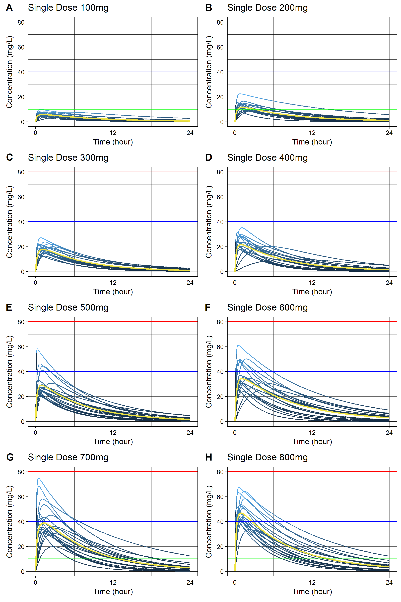
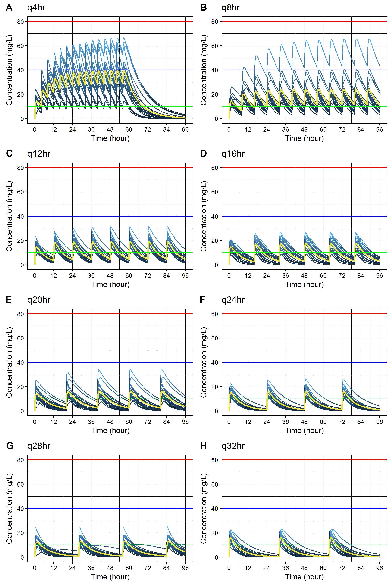

Monte Carlo Simulation of Plasma Caffeine Concentrations by Using Population Pharmacokinetic Model
install.pacakges("devtools")
devtools::install_github("asancpt/caffsim")
# Simply create single dose dataset
caffsim::Dataset(Weight = 20, Dose = 200, N = 20)
# Simply create multiple dose dataset
caffsim::DatasetMulti(Weight = 20, Dose = 200, N = 20, Tau = 12) MyDataset <- caffsim::Dataset(Weight = 20, Dose = 200, N = 20)
knitr::kable(head(MyDataset), format = "markdown")| Tmax | Cmax | AUC | Half_life | CL | V | Ka | Ke |
|---|---|---|---|---|---|---|---|
| 0.4218641 | 8.776502 | 59.34879 | 4.383910 | 3.369909 | 21.31800 | 9.9853883 | 0.1580781 |
| 0.6072780 | 12.240058 | 81.04140 | 4.145404 | 2.467875 | 14.76239 | 6.0867745 | 0.1671731 |
| 1.1300308 | 10.430199 | 91.08975 | 5.207091 | 2.195637 | 16.49766 | 2.8421292 | 0.1330877 |
| 2.7890918 | 14.041108 | 159.81655 | 5.577747 | 1.251435 | 10.07242 | 0.7853489 | 0.1242437 |
| 1.1273886 | 12.447478 | 109.44167 | 5.250648 | 1.827457 | 13.84608 | 2.8604679 | 0.1319837 |
| 0.4768025 | 10.524899 | 61.07652 | 3.675783 | 3.274581 | 17.36890 | 8.0664311 | 0.1885312 |
MyConcTime <- ConcTime(Weight = 20, Dose = 200, N = 20)
knitr::kable(head(MyConcTime), format = "markdown")| Subject | Time | Conc |
|---|---|---|
| 1 | 0.0 | 0.00000 |
| 1 | 0.1 | 11.05218 |
| 1 | 0.2 | 12.28038 |
| 1 | 0.3 | 12.16603 |
| 1 | 0.4 | 11.87460 |
| 1 | 0.5 | 11.56610 |
cowplot package is required#install.packages("cowplot") # if you don't have it
library(cowplot)
MyPlotPub <- lapply(
c(seq(100, 800, by = 100)),
function(x) PlotMulti(ConcTime(20, x, 20)) +
theme(legend.position="none") +
labs(title = paste0("Single Dose ", x, "mg")))
plot(plot_grid(MyPlotPub[[1]], MyPlotPub[[2]],
MyPlotPub[[3]], MyPlotPub[[4]],
MyPlotPub[[5]], MyPlotPub[[6]],
MyPlotPub[[7]], MyPlotPub[[8]],
labels=LETTERS[1:8], ncol = 2, nrow = 4))
MyDatasetMulti <- DatasetMulti(Weight = 20, Dose = 200, N = 20, Tau = 12)
knitr::kable(head(MyDatasetMulti), format = "markdown")| TmaxS | CmaxS | AUCS | AI | Aavss | Cavss | Cmaxss | Cminss |
|---|---|---|---|---|---|---|---|
| 0.4133506 | 13.17941 | 93.36763 | 1.197473 | 110.73429 | 7.780636 | 16.79284 | 2.7692717 |
| 1.1351288 | 10.85961 | 78.85986 | 1.157266 | 99.99824 | 6.571655 | 15.17894 | 2.0627372 |
| 0.7816137 | 10.48628 | 57.00312 | 1.078694 | 76.23717 | 4.750260 | 13.41451 | 0.9786328 |
| 0.4638655 | 22.88723 | 200.63977 | 1.307403 | 137.86864 | 16.719981 | 31.64502 | 7.4405297 |
| 0.3643626 | 18.74429 | 193.55951 | 1.427699 | 165.57496 | 16.129959 | 27.75882 | 8.3157720 |
| 0.4217870 | 12.66350 | 83.49698 | 1.166063 | 102.40230 | 6.958081 | 15.81349 | 2.2520585 |
MyConcTimeMulti <- ConcTimeMulti(Weight = 20, Dose = 200, N = 20, Tau = 12, Repeat = 10)
knitr::kable(head(MyConcTimeMulti), format = "markdown")| Subject | Time | Conc |
|---|---|---|
| 1 | 0.0 | 0.000000 |
| 1 | 0.2 | 3.531497 |
| 1 | 0.4 | 5.943573 |
| 1 | 0.6 | 7.558033 |
| 1 | 0.8 | 8.605146 |
| 1 | 1.0 | 9.249648 |
cowplot package is required#install.packages("cowplot") # if you don't have it
library(cowplot)
MyPlotMultiPub <- lapply(
c(seq(4, 32, by = 4)),
function(x) PlotMulti(ConcTimeMulti(20, 250, 20, x, 15)) +
theme(legend.position="none") +
labs(title = paste0("q", x, "hr" )))
plot(plot_grid(MyPlotMultiPub[[1]], MyPlotMultiPub[[2]],
MyPlotMultiPub[[3]], MyPlotMultiPub[[4]],
MyPlotMultiPub[[5]], MyPlotMultiPub[[6]],
MyPlotMultiPub[[7]], MyPlotMultiPub[[8]],
labels=LETTERS[1:8], ncol = 2, nrow = 4))